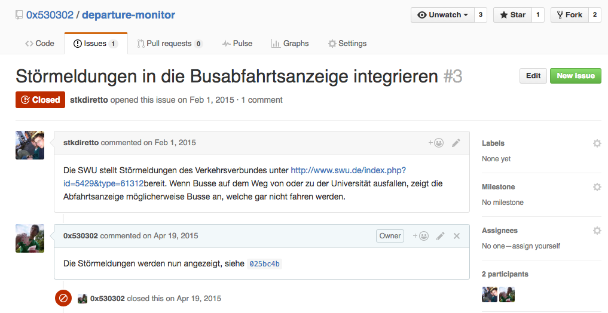

Github
Gemeinsam mit Code die Welt verbessern
dome — github.com/0x530302
Was ist Github?
- Möglichkeit gemeinsam an Code zu arbeiten
- Soziales Netzwerk
- Webhoster für Git
Wer ist so auf GitHub?
Warte... Was ist Git?
- Versionsverwaltung für Dateien
- Strg-Z für Profis
Was heißt Versionsverwaltung?
- index.html
- index2.html
- index3.html
- index-test.html
- index-asdf.html
- ...
Was heißt Versionsverwaltung?

Ein Repository erstellen
In dem Verzeichnis, welches Du mit git verwalten möchtest, git init ausführen.
$ cd mein_verzeichnis
$ git init
Ein Repository auschecken
Kopie auf den eigenen Rechner laden
$ git clone https://github.com/...
Workflow
Wenn Du Dateien geändert hast, musst Du diese zunächst zum Index hinzufügen damit git diese verwaltet
$ git add meine-datei.txt
Danach kannst Du die Datei(en) zum HEAD hinzufügen (quasi die Änderung bestätigen):
$ git commit -m "meine commit Nachricht"
Zu einem Commit gehört immer eine Nachricht in der die Änderungen kurz beschrieben werden.
Änderungen hochlden
Damit auch andere Deine Änderungen sehen und bearbeiten können, musst Du sie nur noch hochladen:
$ git push origin master
Was origin und master bedeuten, sehen wir uns später noch an. :-)
Änderungen aus dem Repository laden
Wenn Du alle Änderungen laden möchtest, musst Du diese pullen
$ git pull
Bevor ihr etwas pusht, solltet ihr immer vorher pullen. Sonst kann es zu Konflikten kommen.
Nützlich
Stand des lokalen Repos einsehen
$ git status
Tipps für GitHub
Readme
Zeige was du machst und wie es bedient wird
# Das ist unser tolles Projekt
Es kann Einhörner auf Regenbögen tanzen lassen.
Wenn du es benutzen willst, dann mach das:
* lade es dir runter
* führe die Datei `program` aus
Wenn ein Fehler kommt, dann schau mal [hier](http://hilfe.de)
Issue Tracking
Fragen und Probleme zu einem Projekt einstellen.
Wähle eine Lizenz für dein Projekt
| MIT Lizenz (Expat) | GNU General Public License v2.0 (GPL) | |
|---|---|---|
| einsehen | ✓ | ✓ |
| verwenden | ✓ | ✓ |
| kopieren | ✓ | ✓ |
| verändern | ✓ | ✓ |
| copyleft | ✗ | ✓ |
Klingt cool! würde ich gerne ausprobieren
Linux - Wie immer im Paket-Manager ;)
Git kann noch viel mehr
Anfänger: git - Der einfache Einstieg
Fortgeschrittene: Git Branching
SELECT * FROM questions